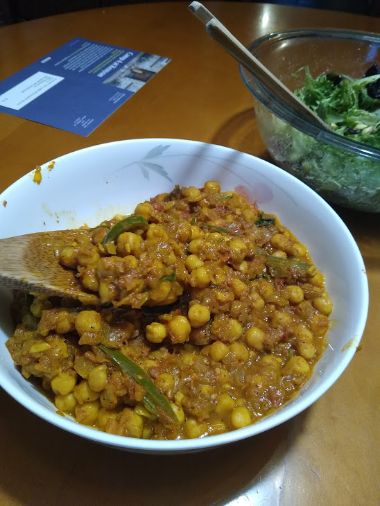

Chickpea Curry Recipe

Description
This is a curry recipe I've done a couple times. It tastes good with rice.It's taken from Buzzfeed Tasty: Tasty Link
Ingredients
- 1 tablespoon vegetable oil
- 1 large onion, diced
- 2 cloves garlic, minced
- ginger, peeled and grated, 1 inch piece
- 1 jalapeno (optional, I don't have very high spice tolerance so I usually put less or leave it out
- 2 table spoons garam masala
- 1 teaspoon turmeric
- 1 teaspoon salt
- 1 teaspoon black pepper
- 2 cups fresh tomato, diced
- 15 oz chickpeas, drained and rinsed (2 cans)
- 1/2 cup water
- 1/2 lemon, juiced
- 1/4 cup fresh cilantro, chopped
Steps
- Heat olive oil in large stock pot over medium high
- Add onion and cook until onion becomes translucent and begins to brown, approximately 3-5 minutes
- Add garlic ginger and jalapeno. Continue to cook over medium high heat until garlic is fragrant and jalapeno is tender, approx. 3-4 minutes
- Add garam masala, turmeric, salt and pepper then continue to cook for 1-2 minutes
- Add tomatoes, chickpeas and water. Stir, scrape off bits on the pot.
- Mixture should start taking on texture of stew. Add water if needed, then bring pot to a simmer and cover with lid.
- Once covered, cook for 15 min., stirring occasionally.
- Remove lid, reduce heat to low, mix in lemon juice and cilantro. Cook over low heat until cilantro has wilted and turned bright green.
- Put the curry in a bowl.